Dům Pt · Interiors
Interactive 3D views of the bathroom, entrance, kitchen & living room, master bedroom, stairs & lower hallway, kids room, room 0.07, home office, store and technical room designs. Each opens in your browser, with styles or stone schemes, light moods and the open / close options in its panel.
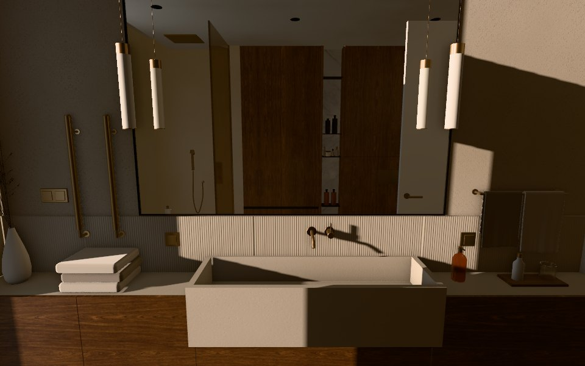
Lower bathroom
The original layout, with five vanity versions to switch between and flip, the stone and the wood to choose, a backlit marble niche between walnut volumes, a cabinet above the WC and a shower with a stone ledge and a floor falling to a linear drain, its glass in line with the cabinet or turned along the window so that you step in from the WC side, there with an optional glass door; click a door, a drawer, a switch or a socket to work it, and run the splash test to see where the water goes.
Open 3D view →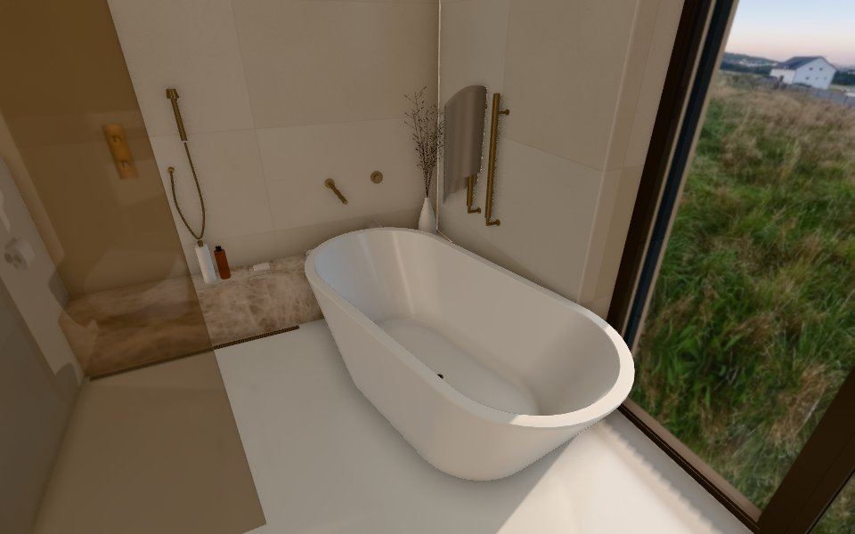
Master bathroom
Bath and walk-in shower, in two layouts: a built-in bath along a fluted tiled wall or a freestanding bath by the window. Pick the wall tiles, the floor, the stone of the shower bench and the wood of the cabinets. With the built-in bath the shower floor falls to a linear drain, and in either layout you can run the splash test to see where the water goes.
Open 3D view →Bathroom alternatives
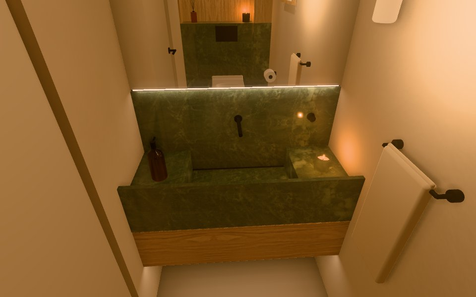
Powder room
A windowless WC with an antoniolupi Street basin, in four styles (Noir, Cosy, Jewel, Japandi), with nine stones, wall paints, six woods and three floors (epoxy, wood, tiles) to try, three ceilings (high, low, or low with a lit recess over the basin), five mirrors (full wall, slim, round, capsule, arch) on a backdrop of paint, stone or wood, the WC pre-wall in stone, glazed tiles or wood, three versions of the cabinet over the WC and three light moods.
Open 3D view →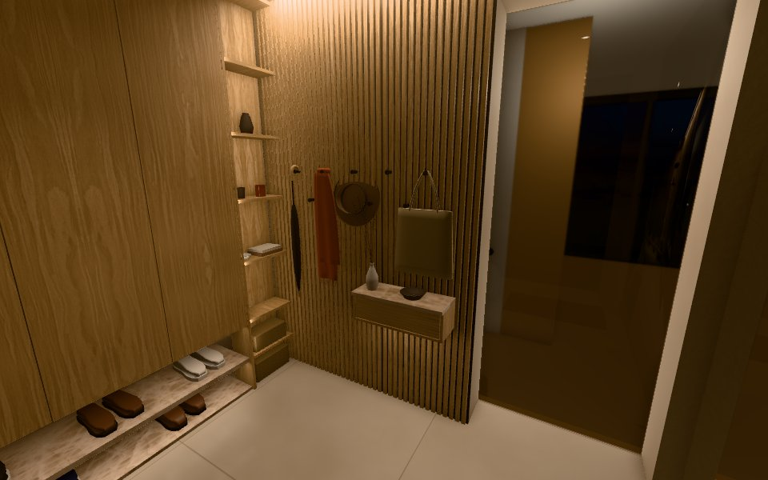
Entrance
The entrance hall with its full-wall mirror, a hook wall, and a floating wardrobe over an open stone shoe rack with open shelving beside it that carries on as an enclosed, cushioned bench with drawers, or one of three alternative designs after the inspiration board (a wood box, a stone wall, soft curves), in the powder room's four styles (Noir, Cosy, Jewel, Japandi), with woods, wall paints, wardrobe doors (wood, fluted or painted), the hook wall in slats, fluted wood, wood, stone or paint, nine stones and 120 × 120 cm floor tiles in any colour and five structures to try; the glass door to the living room as a sliding or a pivot door, the front door and the glass door opening with a click; and four light moods, with the evening sun through the front door's glass and the living room's daylight behind the glass door.
Open 3D view →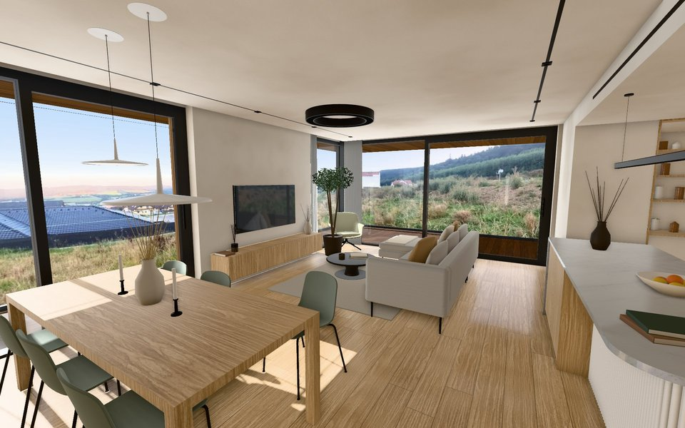
Kitchen & living
The open-plan kitchen, dining and living room: the kitchen run under the window strip, looking out on a garden of clipped hedges and multi-stem trees, with its tall units (the oven at 70 cm under a built-in microwave; the coffee machine behind its door over a tall pull-out, with oak shelves over the machine), wall units with dishes inside and a slim hood under them over the hob (a click opens any door, drawer, the oven, the microwave or the hood’s visor), a stone island with a waterfall end and fluted panel under a linear pendant, the dining table under two Vibia Skan pendants by a mirrored niche with a floating sideboard, an IKEA ÄPPLARYD sofa facing the TV wall with two speakers flush in the ceiling in front of it, a lounge chair by the corner glazing (or living and dining swapped), in the four styles (Noir, Cosy, Jewel, Japandi), with woods, kitchen fronts (wood, fluted or painted), the window strip (with a tilt-and-turn sash or all fixed), the glass door to the hall (sliding, or a pivot door opening either way from either jamb), the pantry's sliding door hung from the ceiling (wood, dark smoked glass or a white slab), nine stones, wall paints and floors (planks or herringbone, in any colour) to try, four light moods with the sun through the day, linen curtains in a lit ceiling recess to draw, and the two terrace doors, the glass door to the hall, the pantry door, the pantry’s tall freezer (with a counter beside it and a rack across from it) and every kitchen drawer to open with a click, and a fireplace to add; the switches and sockets from the electro plan sit on the walls (black or white plates) and the light switches work their lamps with a click; and the hallway from the lobby past the bedroom and the powder room, both doors flush with the wall, to a window floor to ceiling with a large bird of paradise before it, with oak panels on its wall, shadow gaps to add at the ceiling and the walls' foot, and the stairs down to the lower floor wrapped round the powder room in three arms: flush solid oak steps, a black steel handrail on the inner side, LED step lights and a window 2.6 m high over the corner landing.
Open 3D view →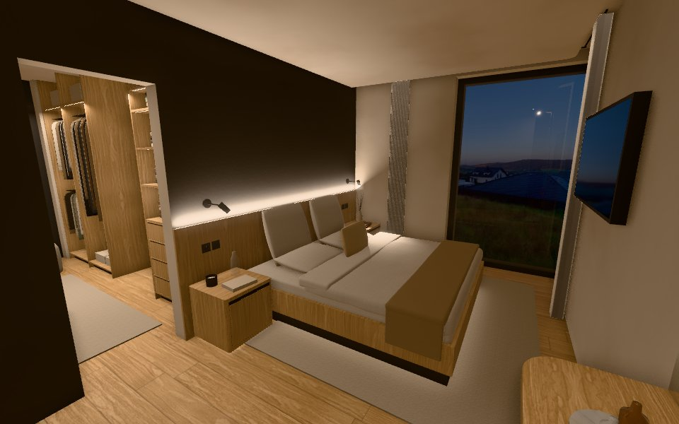
Master bedroom
The master bedroom and its walk-in wardrobe: the bed against a dark wall with a low oak panel and an LED line washing up it (or oak slats floor to ceiling, or an upholstered headboard), floating nightstands with reading lights over them, a dressing corner with a tall organic mirror, open shelves with a lit niche of marble shelves and a tall cabinet beside it, an LED line upright by the mirror, a fluted oak chest of drawers with a framed print in the corner by the door, linen curtains in a lit ceiling recess along the corner glazing, and through an opening in the bed wall, closed by a pocket door sliding into the wall (light, smoked glass, mirror or black), the walk-in wardrobe: oak runs for hanging, drawers and shoes, open, behind bronze glass or behind flush doors, lit under the shelves; in the four styles (Noir, Cosy, Jewel, Japandi), with woods, bedding, wall paints and floors (planks or herringbone, in any colour) to try, four light moods with the sun through the day, and the terrace door, the doors (the pocket door slides), the drawers and the wardrobe doors to open with a click, and the switches and sockets as in the electro drawing (the rockers work the lights); and the hallway outside, round the stairs down.
Open 3D view →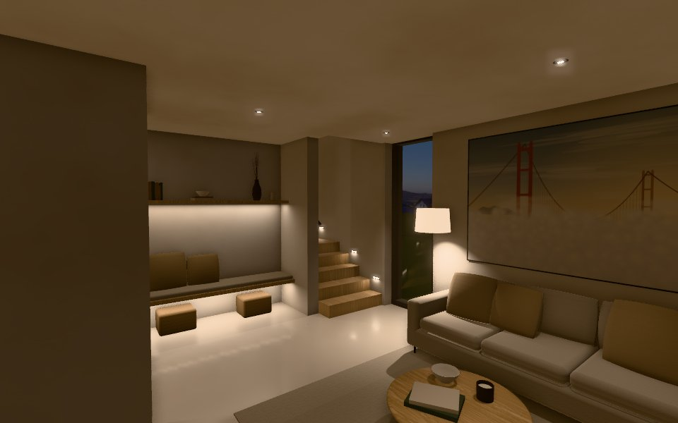
Stairs, hallway & home office
The stairs from the upper hallway down to the lower floor, wrapped round the powder room in three arms of flush solid oak steps under a black steel handrail, the last arm 1.07 m wide and its bottom step running on to the niche, with LED step lights and a window 2.6 m high over the corner landing; at their foot the landing room as a lounge (an IKEA ÄPPLARYD sofa with a chaise in light grey under a poster of a bridge in the clouds, facing a TV on a floating unit beside a floor-to-ceiling cupboard, a round table, a floor lamp, a fig in the corner) or empty as drawn, and the niche under the stairs as a 60 cm cupboard behind white doors set back into it, over the second step carried on as a plinth of oak drawers above a lit gap for shoes or over two wide oak drawers down to the floor, or behind flush doors floor to ceiling, its doors and drawers opening with a click, the second step and the drawers carried on from it in the wood, in stone or lacquered in any colour; two light switches by the stairs that work the stairs' and the hallway's lights, and sockets round the landing room; the hallway to the study under a lowered ceiling, its west wall clad in wood floor to ceiling and washed by an LED line in a ceiling recess, its doors white in slim stone frames set off the wood by a shadow gap, the doors opposite flush with the wall, all on a seamless epoxy floor; in the Japandi style, with woods, nine stones, wall paints and epoxy colours to try and four light moods with the sun through the day.
Open 3D view →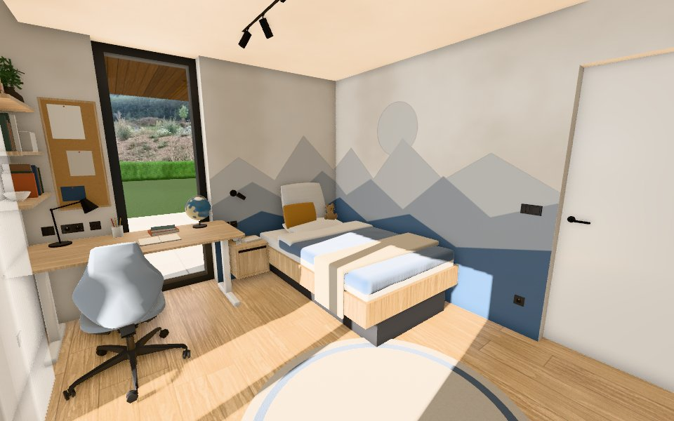
Kids room
A boy's room off the lower hallway: a 120 × 200 bed along the hallway wall on a floating wooden frame with an LED line under it, a floating nightstand with a reading light over it, an IKEA BEKANT desk, 160 × 80 cm, across the south window in its real finishes, and a flush white cabinet built into the niche floor to ceiling, with a rail, shelves and drawers inside. A plasterboard ceiling lowered to 2.55 m with a 2 m track of black spots in it, the curtains in a recess up to the slab, and the window over the desk to the floor or on a raised sill. The walls round the bed plain, two-tone or painted with a range of mountains in six colours; pick the wood, bedding, wall paint and wooden floor (planks or herringbone), draw the curtain, let down the exterior blinds, and click the doors, drawers and switches to work them.
Open 3D view →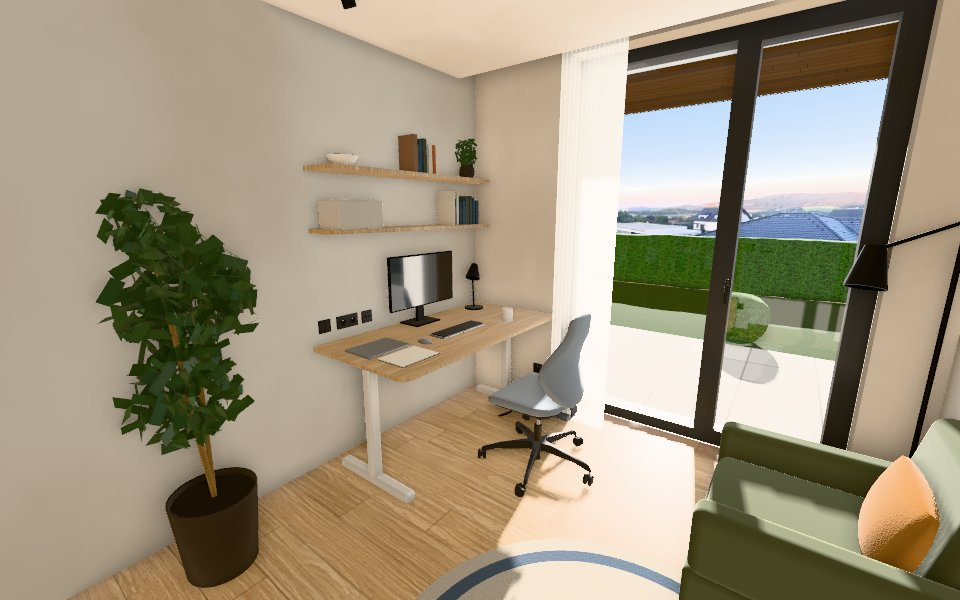
Room 0.07
A room off the lower hallway with three uses to switch between. As a kids room: the bed along the north wall under a painted mountain range, a floating nightstand with a reading light, an IKEA BEKANT desk, 120 × 80 cm, by the window, shelves and a cork board. As a home office: a 160 × 80 cm BEKANT with a screen and a shelf over it, a wooden bookcase built in floor to ceiling on the hallway wall, an armchair in four wools under a floor lamp. As a home gym: rubber tiles, wall bars, a frameless mirror, a dumbbell rack, kettlebells, a bench, a mat and a ball. In every use a flush white wardrobe built into the bay, the east window floor to ceiling with a wave curtain in a ceiling recess and an exterior blind, and a 2 m track whose spots turn to the furniture; pick the wood, wall paint and floor, and click the doors, drawers and switches to work them.
Open 3D view →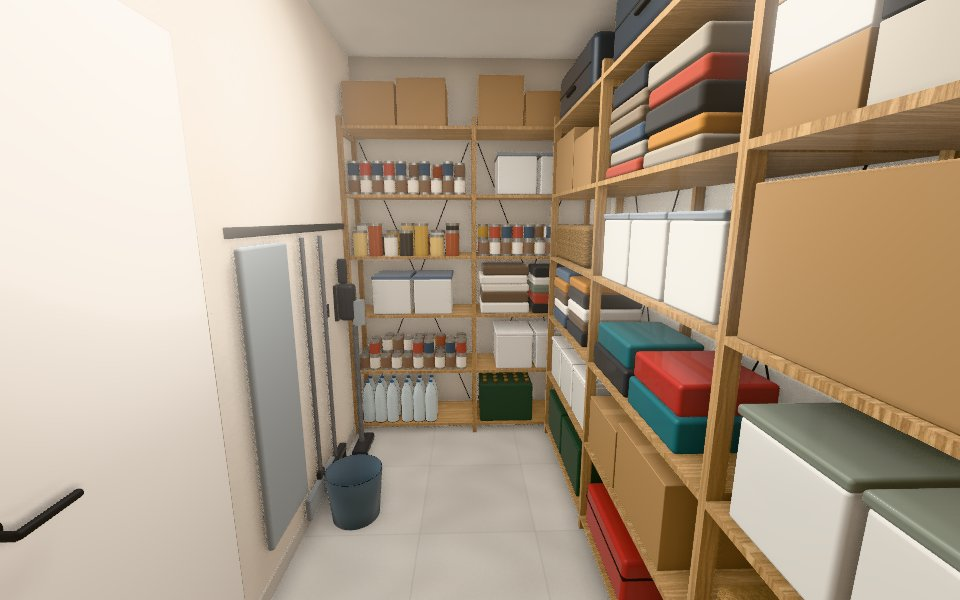
Store
The windowless store between the study and the technical room, 3.79 × 1.94 m. Shelving round three walls with an aisle between them, in solid pine ladders, black steel or white rails on the walls with the floor left clear, filled with boxes, bins, jars and tins, water, crates and suitcases for scale; a utility wall by the door for the vacuum, the broom, the mop and the ironing board. A white door flush with the wall, opening into the store (click it to look out into the hallway), an LED batten over the aisle in warm, neutral or cool white, its switch by the door. Pick the shelving, the wall paint and the floor tiles' size and colour.
Open 3D view →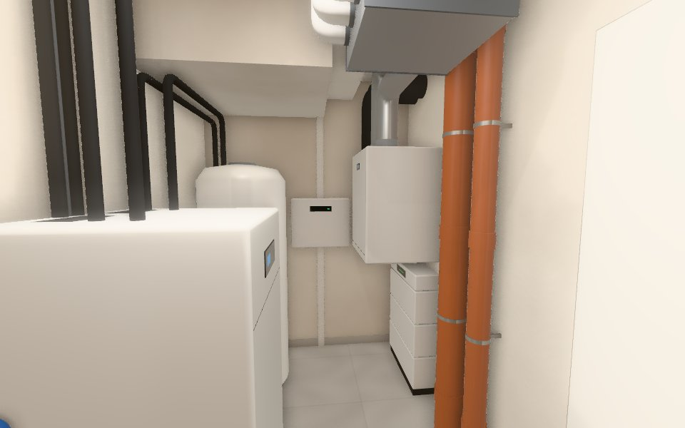
Technical room
The windowless technical room and laundry between the store and the stairs, 3.70 × 1.94 m, the stairs' first flight stepping down over its north end. The model's laundry unit along the south wall: a cleaning cupboard, the washer and the dryer stacked with a pull-out shelf between them, a utility sink in an oak worktop with cupboards under and over it. The plant: the heat pump's indoor unit, the hot water tank under the landing, the underfloor heating's manifold and the water main on the west wall, the Zehnder ventilation unit and its distribution boxes, the photovoltaics' battery and inverter, a cabinet for the NAS; the radon venting and the rainwater stack by the door, exposed or boxed in. Click a machine or a pipe to see what it is, the doors and cupboards to open them. Pick the cabinets' finish, the wall paint and the floor tiles.
Open 3D view →